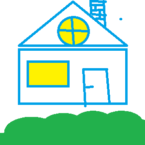
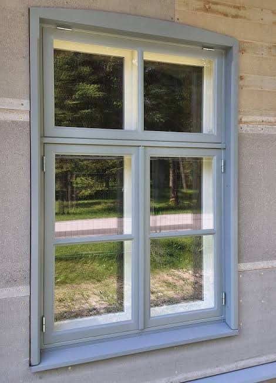

Pööninguaken on hoone katusel või viilu sees asuv ümmargune valgusava. See võimaldab loomulikul päevavalgusel tungida maja kõige kõrgemale korrusele ehk pööningule. Kollane värv viitab sellele, et ruumis põleb tuli, luues hubase ja sooja mulje.